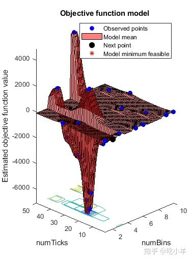
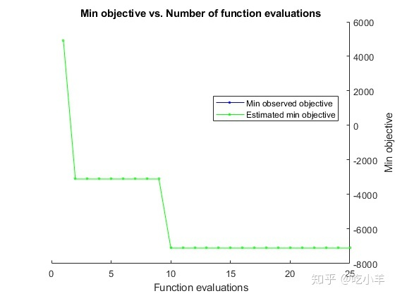
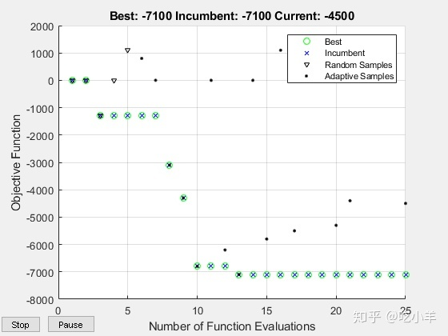

Home
此示例使用贝叶斯优化来优化算法交易模型中的超参数，并由日末收益监督。
加载预处理的LOB数据集LOBVars.mat，来自NASDAQ证券INTC。
load LOBVars数据集包含每个订单的以下信息：到达时间t（从午夜开始的秒数），1级要价MOAsk，1级出价MOBid，中间价S和失衡指数I。
此示例包括几个支持函数，这些函数存储在中matlabroot/examples/finance/data/LOBSupportingFiles。要查看它们，请更改您的工作文件夹。
cd(fullfile(matlabroot,'examples','finance','data','LOBSupportingFiles'));交易策略
给定限价单（LOB）不平衡指数I的当前和先前状态rho，以及价格DS中最新观察到的方向，交易矩阵Q包含未来价格走势的概率。
查看支持函数 tradeOnQ.m，该函数根据Q中的交易模式实施一个简单的交易策略。
function cash = tradeOnQ(Data,Q,n,N)
?
% Reference: Machine Learning for Statistical Arbitrage
% Part II: Feature Engineering and Model Development
% Data
?
t = Data.t;
MOBid = Data.MOBid;
MOAsk = Data.MOAsk;
?
% States
?
[rho,DS] = getStates(Data,n,N);
?
% Start of trading
?
cash = 0;
assets = 0;
?
% Active trading
?
T = length(t);
?
for tt = 2:T-N % Trading ticks
?
% Get Q row, column indices of current state
row = rho(tt-1)+n*(DS(tt-1)+1);
downColumn = rho(tt);
upColumn = rho(tt) + 2*n;
?
% If predicting downward price move
if Q(row,downColumn) > 0.5
?
cash = cash + MOBid(tt); % Sell
assets = assets - 1;
% If predicting upward price move
?
elseif Q(row,upColumn) > 0.5
?
cash = cash - MOAsk(tt); % Buy
assets = assets + 1;
?
end
?
end
?
% End of trading (liquidate position)
?
if assets > 0
?
cash = cash + assets*MOBid(T); % Sell off
?
elseif assets < 0
?
cash = cash + assets*MOAsk(T); % Buy back
?
end该算法使用来自Q的预测来做出每笔交易的决策。它说明了任何优化的机器学习算法的一般机制。
如果套利机会出现，该策略将试图通过在每个报价时使用单个股票的市场定单（最好的报价）从预期的价格变化中获利。该策略可以扩大到更大的交易量。使用从Q中获得的条件概率，该tradeOnQ函数采取以下操作之一：
- 如果向上远期价格变动的可能性大于0.5，则买入
- 如果向下远期价格变动的可能性大于0.5，则卖出
在交易日结束时，该功能会立即平仓（liquidates the position at the touch）。
该策略要求Data具有t报价时间和相应的市场订单买入价MOBid和卖出价MOAsk。在实时交易中，数据由交易所提供。本示例通过将历史样本分为训练（校准）和验证子样本来评估策略。验证子样本可充当实时交易数据的代表。该策略取决于其本身的交易矩阵Q，我们可以在做出许多超参数选择后进行估算。当优化策略时，输入n和N是要调整的超参数。
超参数
连续时间马尔可夫模型和所得的交易矩阵Q取决于四个超参数的值：
lambda—用于计算失衡指数I的加权参数dI— 平滑期间用于平均I的反向刻度数numBins—用于分割平滑的I以进行离散化的分组数dS—用于将价格S转换为离散价格DS的远期报价数量
通常，所有四个超参数都是可调的。但是，为了便于可视化，该示例仅通过调整numBins和N压缩了维度。本例中：
- 修正
lambda - 让
numBins=n，n可以自由变化 - 均衡窗口长度
dI=dS=N，其中N可以自由变化
这些限制不会显着影响优化结果。优化算法搜索二维参数空间（n，N），以便配置可以获得最大交易回报。
训练和验证数据
机器学习需要一个子样本用以估计Q，另一个子样本进行评估超参数选择。
指定一个断点以将数据分为训练和验证子样本。断点影响目标函数的评估，实际上是另一个超参数。但是，由于您不调整断点，因此它是优化过程的外部条件。
bp = round((0.80)*length(t)); % Use 80% of data for training在时间表中收集数据以传递给tradeOnQ。
Data = timetable(t,S,I,MOBid,MOAsk);
TData = Data(1:bp,:); % Training data
VData = Data(bp+1:end,:); % Validation data交叉验证
交叉验证描述了各种技术，这些技术用于评估训练结果（此处是计算Q）如何以预测的可靠性泛化为独立的验证数据（此处为获利的交易）。交叉验证的目的是在训练结果中标记问题，例如偏差和过度拟合。在交易策略的上下文中，过度拟合是指Q的时间的依存关系，即非平稳性。随着Q时间的变化，它在预测未来价格走势中的作用减弱。关键的诊断问题是在有限的交易范围内Q变化的程度和速率。
在有训练和验证数据的情况下，指定超参数并在两个子样本中比较Q。支持函数makeQ.m提供了生成Q的步骤。
% Set specific hyperparameters
?
n = 3; % Number of bins for I
N = 20; % Window lengths
?
% Compare Qs
?
QT = makeQ(TData,n,N);
QV = makeQ(VData,n,N);
QTVDiff = QT - QV
QTVDiff = 9×9
?
0.0070 0.0182 0.1198 -0.0103 -0.0175 -0.0348 0.0034 -0.0007 -0.0851
-0.0009 0.0176 0.2535 -0.0010 -0.0233 -0.2430 0.0019 0.0058 -0.0106
0.0184 0.0948 0.0835 -0.0195 -0.1021 -0.1004 0.0011 0.0073 0.0168
0.0462 0.0180 0.0254 -0.0512 -0.0172 0.0417 0.0050 -0.0009 -0.0671
0.0543 0.0089 0.0219 -0.0556 -0.0169 -0.0331 0.0013 0.0080 0.0112
0.1037 0.0221 0.0184 -0.1043 -0.0401 -0.0479 0.0006 0.0180 0.0295
0.0266 0.0066 0.0054 -0.0821 -0.0143 -0.0116 0.0555 0.0077 0.0062
0.0615 0.0050 0.0060 -0.0189 -0.0207 -0.0262 -0.0426 0.0157 0.0203
0.0735 0.0103 0.0090 -0.0788 -0.1216 -0.0453 0.0053 0.1113 0.0362QT和QV之间的差异很小，尽管它们根据其在矩阵中的位置而有所不同。识别交易效率低下，是由指数（市场状态）引起的，其中一个矩阵给出交易提示（概率值> 0.5），而另一个矩阵则没有。
Inhomogeneity = (QT > 0.5 & QV < 0.5 ) | (QT < 0.5 & QV > 0.5 )
Inhomogeneity = 9x9 logical array
?
0 0 0 0 0 0 0 0 0
0 0 0 0 0 0 0 0 0
0 0 0 0 0 0 0 0 0
0 0 0 0 0 0 0 0 0
0 0 0 0 0 0 0 0 0
0 0 0 0 0 0 0 0 0
0 0 0 0 0 0 0 0 0
0 0 0 0 0 0 0 0 0
0 0 0 0 0 0 0 0 0使用给定的超参数设置，数据中不会出现明显的不均匀性。
进行同质性假设的严重性不是先验的，只能从更全面的回溯测试中得出。统计检验是可用的，例如，如[4]和[5]中所述。在实时交易期间，对适当大小的训练数据进行Q的滚动计算可以提供最可靠的提示。这种方法承认市场固有的不稳定性。
机器学习
机器学习是指通过检测模式（例如计算Q）并基于可用数据进行推断，以自动化方式有效执行任务（例如交易）的一般方法。通常，数据是动态的并且足够大，需要专门的计算技术。评估过程（调整超参数以描述数据和任务的直接执行）是持续存在的。
除了处理大数据的挑战外，评估复杂的，有时是黑箱的目标函数的过程也具有挑战性。目标函数监督超参数的计算。交易策略首先通过Q对训练子样本进行计算，然后在评估（实时）子样本中进行交易来评估超参数调整。目标是最大化利润，或者最小化亏损，经适当地约束配置（n，N）空间。该目标是典型的“昂贵”目标函数。贝叶斯优化是一种适合于此类目标函数的机器学习。它的主要优点之一是无需进行昂贵的衍生计算。要实现贝叶斯优化，请使用“统计和机器学习工具箱（Statistics and Machine Learning Toolbox）”的函数bayesopt。
支持函数optimizeTrading.m使用bayesopt在tradeOnQ中优化交易策略。
function results = optimizeTrading(TData,VData)
?
% Optimization variables
?
n = optimizableVariable('numBins',[1 10],'Type','integer');
N = optimizableVariable('numTicks',[1 50],'Type','integer');
?
% Objective function handle
?
f = @(x)negativeCash(x,TData,VData);
?
% Optimize
?
results = bayesopt(f,[n,N],...
'IsObjectiveDeterministic',true,...
'AcquisitionFunctionName','expected-improvement-plus',...
'MaxObjectiveEvaluations',25,...
'ExplorationRatio',2,...
'Verbose',0);
?
end % optimizeTrading
?
% Objective (local)
function loss = negativeCash(x,TData,VData)
?
n = x.numBins;
N = x.numTicks;
?
% Make trading matrix Q
?
Q = makeQ(TData,n,N);
?
% Trade on Q
?
cash = tradeOnQ(VData,Q,n,N);
?
% Objective value
?
loss = -cash;
?
end % negativeCash通过将训练和验证数据传递给optimizeTrading来优化交易策略。
rng(0) % For reproducibility
results = optimizeTrading(TData,VData); 

估计的最小目标与观察到的最小目标一致（搜索是单调的）。与基于导数的算法不同，bayesopt不会收敛。在尝试寻找全局最小值时，bayesopt持续搜索直到达到指定的迭代次数（25）。
通过将results传递给bestPoint来获得最佳配置。
[Calibration,negReturn] = bestPoint(results,'Criterion','min-observed')
Calibration=1×2 table
numBins numTicks
_______ ________
?
3 24
negReturn = -7100每次交易一股，由Q指定，使用最优策略（n，N）=（3,24）在交易日的最后20％获利$ 0.71。修改交易量可以缩放收益。
专为昂贵目标而设计的另一种优化器是surrogateopt （Global Optimization Toolbox?）。它使用不同的搜索策略，并且可以根据目标更快地找到最佳位置。支持函数optimizeTrading2.m使用surrogateopt而不是bayesopt优化tradeOnQ中的交易策略。
rng(0) % For reproducibility
results2 = optimizeTrading2(TData,VData)
Scalar objective function
Number of variables: 2
Number of integer constraints: 2
Number of inequality constraints: 0
?
F-count Time Best Current Trial
(seconds) Fval Fval type
1 1.25 -0.0000e+00 -0.0000e+00 random
2 2.31 -0.0000e+00 -0.0000e+00 random
3 2.74 -1.3000e+03 -1.3000e+03 random
4 3.15 -1.3000e+03 -0.0000e+00 random
5 3.55 -1.3000e+03 1.1000e+03 random
6 4.20 -1.3000e+03 8.0000e+02 adaptive
7 4.73 -1.3000e+03 -0.0000e+00 adaptive
8 5.09 -3.1000e+03 -3.1000e+03 adaptive
9 5.47 -4.3000e+03 -4.3000e+03 adaptive
10 5.86 -6.8000e+03 -6.8000e+03 adaptive
11 6.24 -6.8000e+03 -0.0000e+00 adaptive
12 6.54 -6.8000e+03 -6.2000e+03 adaptive
13 6.83 -7.1000e+03 -7.1000e+03 adaptive
14 7.24 -7.1000e+03 -0.0000e+00 adaptive
15 7.55 -7.1000e+03 -5.8000e+03 adaptive
16 7.90 -7.1000e+03 1.1000e+03 adaptive
17 8.30 -7.1000e+03 -5.5000e+03 adaptive
18 8.69 -7.1000e+03 -0.0000e+00 adaptive
19 8.96 -7.1000e+03 -0.0000e+00 adaptive
20 9.31 -7.1000e+03 -5.3000e+03 adaptive
21 9.59 -7.1000e+03 -4.4000e+03 adaptive
22 9.99 -7.1000e+03 -0.0000e+00 adaptive
23 10.30 -7.1000e+03 -0.0000e+00 adaptive
24 10.70 -7.1000e+03 -0.0000e+00 adaptive
25 11.02 -7.1000e+03 -4.5000e+03 adaptive
Surrogateopt stopped because it exceeded the function evaluation limit set by
'options.MaxFunctionEvaluations'.
results2 = 1×2
?
3 24使用surrogateopt所获得的结果与采用bayesopt获得的结果相同。图中包含有关特定于surrogateopt算法的搜索进度的信息。
通过将最佳超参数和整个数据集传递到makeQ计算Q。
bestQ = makeQ(Data,3,24)
bestQ = 9×9
?
0.3933 0.1868 0.1268 0.5887 0.7722 0.6665 0.0180 0.0410 0.2068
0.5430 0.3490 0.2716 0.4447 0.6379 0.6518 0.0123 0.0131 0.0766
0.6197 0.3897 0.3090 0.3705 0.5954 0.6363 0.0098 0.0150 0.0547
0.1509 0.0440 0.0261 0.8217 0.8960 0.6908 0.0273 0.0601 0.2831
0.1900 0.0328 0.0280 0.7862 0.9415 0.8316 0.0238 0.0257 0.1404
0.2370 0.0441 0.0329 0.7391 0.9221 0.8745 0.0239 0.0338 0.0925
0.1306 0.0234 0.0101 0.7861 0.6566 0.4168 0.0833 0.3200 0.5731
0.1276 0.0169 0.0118 0.7242 0.6505 0.4712 0.1482 0.3326 0.5171
0.1766 0.0282 0.0186 0.7216 0.7696 0.6185 0.1018 0.2023 0.3629交易矩阵bestQ可以用作下一个交易日的起点。
概要
本示例实现了前两个相关示例中开发的优化交易策略。数据分为训练和验证子样本，分别用于计算交易矩阵Q和执行交易算法。在超参数设置的空间上，使用全局优化器bayesopt和surrogateopt重复该过程，这两个过程都可确定产生正收益的最优策略。该方法有许多选项可以进一步定制。
参考文献
[1] Bull, Adam D. "Convergence Rates of Efficient Global Optimization Algorithms." Journal of Machine Learning Research 12, (November 2011): 2879–904.
[2] Rubisov, Anton D. "Statistical Arbitrage Using Limit Order Book Imbalance." Master's thesis, University of Toronto, 2015.
[3] Snoek, Jasper, Hugo Larochelle, and Ryan P. Adams. "Practical Bayesian Optimization of Machine Learning Algorithms." In Advances in Neural Information Processing Systems 25, F. Pereira et. al. editors, 2012.
[4] Tan, Bar??, and Kamil Y?lmaz. “Markov Chain Test for Time Dependence and Homogeneity: An Analytical and Empirical Evaluation.” European Journal of Operational Research 137, no. 3 (March 2002): 524–43. https://doi.org/10.1016/S0377-2217(01)00081-9.
[5] Wei?bach, Rafael, and Ronja Walter. “A Likelihood Ratio Test for Stationarity of Rating Transitions.” Journal of Econometrics 155, no. 2 (April 2010): 188–94. https://doi.org/10.1016/j.jeconom.2009.10.016.
注：本文根据MATLAB官网内容修改而成。
======================================================================
我的测试结果及程序
下面是我测试的代码：